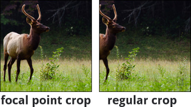
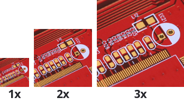
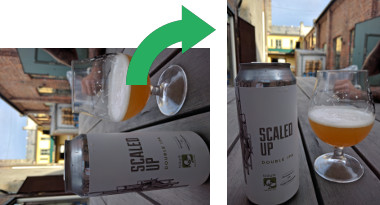

Features
-
Backend agnostic
Supports common image sources out of the box - Amazon S3, Google Cloud Storage, remote HTTP source, local filesystem.
Adding support for other sources is easy with the Mead plugin architecture.
-
Great performance
Image transformations are fast, utilizing the blazingly fast libvips image processing library.
Resizing an image is typically 4x-5x faster than using the quickest ImageMagick and GraphicsMagick settings.
-

Focal point cropping
Using focal point cropping, crops are smarter and will prevent removal of key features of images.
Future releases will support fetching metadata such as focal points from configurable sources, enabling face and feature detection.
-

DPR-aware with client hints
In todays world of high-resolution displays, you'll want to deliver images that look crystal clear to any user, regardless of their device. Mead allows you to either specify a Device Pixel Ratio (DPR), or have modern browsers report the DPR of the display using Client Hints, seamlessly giving the user the best fit for her device.
-
Rich transformations
In addition to resizing and cropping, Mead also supports various filter-like transformations.
Inverting colors, blurring or sharpening, trimming or padding - a wide range of filters are available by default, and further transformations may also be provided by plugins.
-

Rotate images by EXIF
Mead automatically rotates images by the EXIF-orientation stored within the image metadata.
Orientation can also be explicitly specified as a transformation, along with any width/height constraints, crops etc.
-
Signed URLs (optional)
Image URLs can be signed to prevent users from generating arbitrary transformations.
This feature can be enabled/disabled on a per-source basis, depending on your use case.